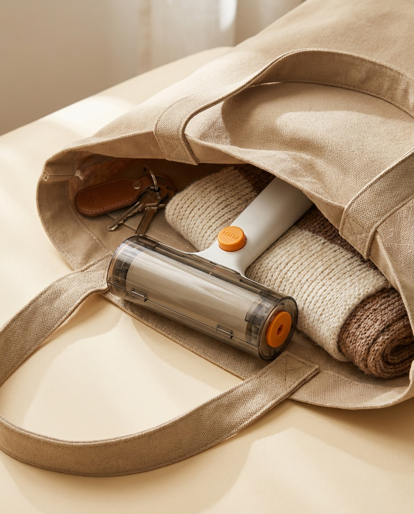

El pelo de tu mascota deja de ser tu problema diario
Una pasada y el sofá vuelve a ser de color liso. Va tapado, así que no coge polvo en el cajón y te lo puedes llevar donde haga falta.
IVA incluido. Envío gratuito a España peninsular.
Quiero el mío- ✓Funciona en sofá, ropa, cama, alfombra y tapicería del coche
- ✓Tapa transparente: la superficie no se ensucia entre usos
- ✓Cabe en el bolso, la mochila o la guantera del coche
- ✓Sale de un almacén en España, no de China

Convives con ello todos los días
Si tienes perro o gato, esto te suena. No es un problema grave. Es un problema constante, que es peor.
- ✕Te cambias antes de salir y la ropa oscura ya lleva pelo.
- ✕Aspiras el sofá y a las dos horas está otra vez igual.
- ✕Se te acaban los rollos adhesivos siempre en el peor momento.
- ✕Avisas a alguien antes de que se siente en tu sofá.

Tres movimientos y ya está
Sin instrucciones y sin montaje. Lo abres y ya está funcionando.
Pasas
Deslizas el rodillo sobre la tela en un sentido y en el otro. El cepillo interior arrastra el pelo hacia dentro.
Arrancas
Cuando la hoja se llena, tiras de ella y aparece la siguiente. Un gesto.
Tapas
Le pones la tapa y lo guardas. Al cogerlo otra vez sigue limpio, no lleno de polvo.
Lo que estás comprando, en datos
Sin adjetivos. Estas son las especificaciones del fabricante.
| Tipo | Rodillo adhesivo con rollo reemplazable |
| Material | ABS + PC + TPR |
| Color | Blanco, tapa transparente, detalles en naranja |
| Medidas | 19,5 × 11 × 6,5 cm |
| Peso | 160 g |
| Cambio de rollo | Botón PUSH, sin herramientas |
| Superficies | Ropa, muebles, sofás, camas y asientos de coche |
160 gramos y 19,5 cm: por eso cabe en el bolso.
Frente al rodillo de siempre
Recoge el pelo igual de bien. La diferencia está en el rato que pasa guardado, que es casi todo el tiempo.
| ZEROPELO | Rodillo de supermercado | |
|---|---|---|
| Guardado en el cajón | Va tapado, sigue limpio | Coge polvo y pelusa |
| Al cogerlo | Listo para pasar | Hay que arrancar la hoja sucia |
| En el bolso o el coche | Con la tapa puesta, sin problema | Se pega a todo |
| Cambiar el rollo | Se saca y se pone, sin herramientas | Igual |
| Dejarlo a la vista | Se puede | Mejor que no |
Elige tu opción
Envío gratuito en las dos. Si no te convence, tienes 14 días para devolverlo.
Rodillo ZEROPELO
El básico, para empezar.
IVA incluido · Envío gratis
- ✓1 rodillo con tapa transparente
- ✓Envío gratuito desde España
- ✓14 días de devolución
Kit ZEROPELO Completo
Para casa, ropa y mascota.
IVA incluido · Envío gratis
- ✓1 rodillo con tapa transparente
- ✓Guante de silicona para cepillar y recoger pelo
- ✓Cepillo atrapapelos para la lavadora
- ✓Envío gratuito y 14 días de devolución

Cabe donde lo necesitas
160 gramos y 19,5 centímetros. Con la tapa puesta se mete en el bolso, en la mochila o en la guantera sin pegarse a nada.
Y el pelo casi nunca aparece cuando estás en casa con tiempo. Aparece cuando ya vas tarde.
Qué dicen quienes ya lo tienen
Valoraciones del producto recogidas en la ficha del fabricante. Todavía no son de compras hechas en esta tienda, y lo decimos claro.
PEGAR AQUÍ UNA VALORACIÓN REAL DE LA FICHA DEL FABRICANTE, TAL CUAL ESTÁ ESCRITA
PEGAR AQUÍ OTRA VALORACIÓN REAL, SIN RETOCARLA
PEGAR AQUÍ UNA TERCERA, Y QUE NO SEA DE 5 ESTRELLAS: UNA CRÍTICA HONESTA VENDE MÁS QUE TRES ELOGIOS
Preguntas frecuentes
¿Sirve para gato y para perro?
Sí. Funciona igual con pelo corto y con pelo largo, porque no depende del adhesivo sino del cepillo interior que arrastra el pelo hacia la cámara.
¿Lleva recambios? ¿Son fáciles de cambiar?
Sí, lleva rollo adhesivo y se cambia cuando se acaba. Se saca y se pone sin herramientas.
La diferencia con uno de supermercado no está ahí: está en la tapa. La superficie no coge polvo mientras está guardado, así que cuando lo coges está listo, y puedes llevarlo en el bolso sin que se pegue a todo.
¿Cuánto tarda en llegar?
Entre 3 y 7 días laborables. Sale de un almacén situado en España, no directamente de Asia.
¿Puedo devolverlo si no me convence?
Sí. Tienes 14 días naturales desde que lo recibes para desistir sin justificar el motivo, conforme al Real Decreto Legislativo 1/2007. En ese caso el envío de vuelta lo pagas tú, y nosotros te devolvemos el precio del producto y el envío original.
Si el producto llega dañado, no funciona o nos hemos equivocado de artículo, la devolución te sale gratis: la pagamos nosotros. Todo el detalle está en la política de devoluciones.
¿Se puede lavar?
El cuerpo se limpia con un paño húmedo. No debe sumergirse ni meterse en el lavavajillas.
¿Todavía no lo tienes claro?
Déjanos tu correo y te avisamos cuando abramos pedidos, con la guía de las cinco cosas que de verdad funcionan contra el pelo en casa. Nada más.
Tu sofá puede volver a ser de color liso
Siempre limpio, siempre a mano, y sin tener que avisar a nadie antes de que se siente.
Ver las opciones